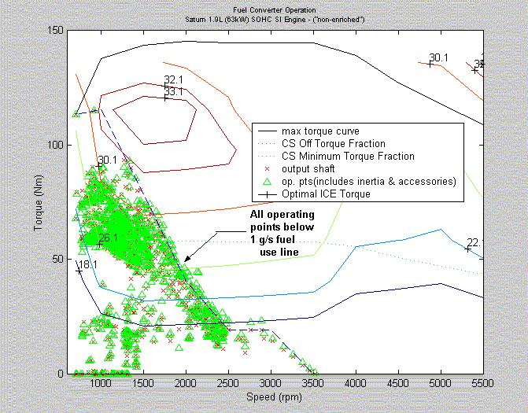
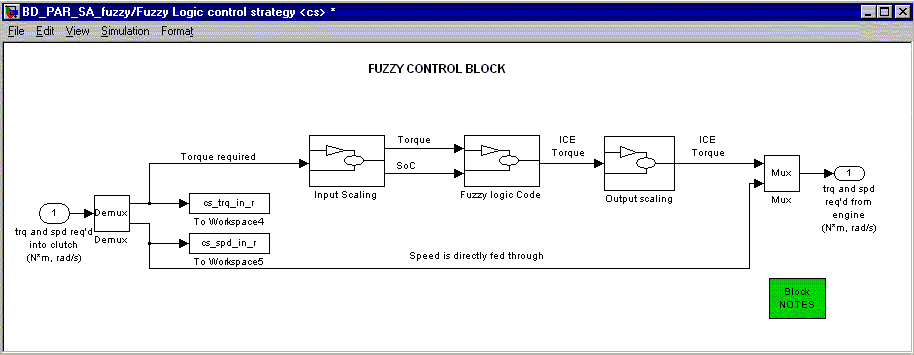
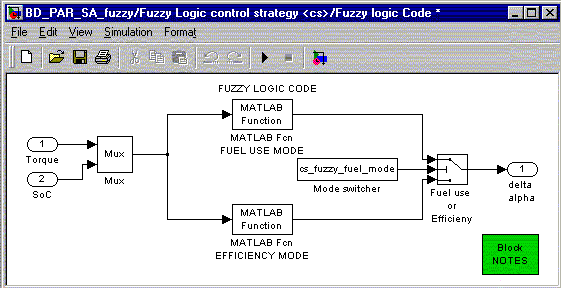
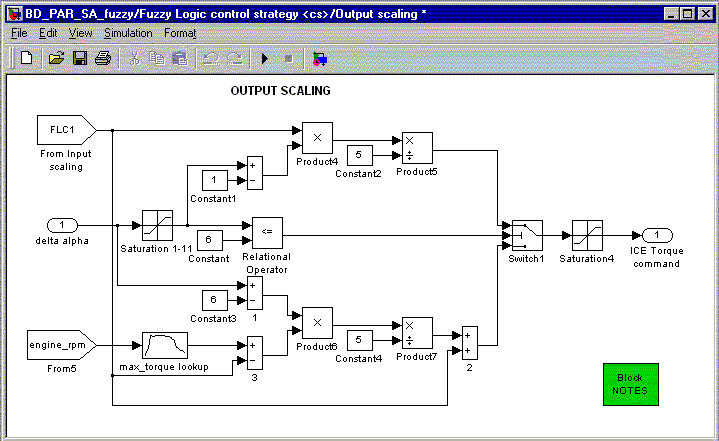

Fuzzy Logic Control Strategy
Introduction
Why Fuzzy Logic
Working of the strategy in ADVISOR
Fuel use mode
Efficiency mode
Block diagrams
In the control of a parallel hybrid electric vehicle (HEV), one of the primary goals is to set the IC engine operation in it’s peak efficiency region. This improves the overall efficiency of the powertrain. This is best achieved by a CVT. But in the absence of one, the ICE operation must be set according to the road load and the battery state of charge (SoC).
2 strategies are provided in ADVISOR that can be used to achieve this goal.
- One is the fuel-use strategy, which limits the instantaneous fuel consumption as calculated from the fuel-use map.
- Another strategy is the Efficiency strategy, which tries to operate the engine in it’s peak efficiency regions.
Details of these 2 strategies are given below.
TEM_Desired = TLOAD - TICE_Set
where TLOAD is the load required from the drive cycle due to acceleration, drag, road grade, etc., and TICE_Set is the desired output torque of the ICE. The controller outputs the change of the throttle command.
This is a strategy that limits the instantaneous fuel use (in a quasi-static simulation like in ADVISOR) of the IC Engine. This makes sure that the fuel use (g/s) does not increase beyond a particular value. Note that this strategy is not based on the efficiency of the engine. It primarily limits the fuel use to a particular value. Each engine in ADVISOR has an associated fuel use map (in g/s). This map is used to determine the allowable range of speed and torque from the engine.
The following variables are used in this strategy:
cs_fuzzy_fuel_mode(boolean)
This is set to 1 for the fuel mode (and 0 for the efficiency mode)
cs_fuzzy_fuel_limit(g/s)
This variable holds the limiting value of fuel usage in the engine. You may change this variable to suit different engines with varying fuel maps.
The following graph depicts the IC Engine operating points for a 63 kW SI Engine, where the fuel use has been limited to 1 g/s.

The variable cs_fuzzy_fuel_limit (g/s) contains the limiting fuel value in grams per second. This variable is set to a default value of 2 (g/s). The user may define a vehicle and run the simulation once to check the sizing of the engine, and whether it warrants to change the value in the above variable. Suppose that the engine is small, and the fuel use is limiting the performance of the vehicle, then the user can change this value (for different g/s) and simulate again. This may be repeated untill the user finds the lowest fuel use value, that :
- provides sufficient torque to meet the trace - maintain charge in the battery - provides acceptable fuel mileage
In case the user finds the operating points of the ICE engine to be much below the fuel line, the value of the above variable may be reduced till acceptable performance is reached.
This strategy is used to run the IC engine about it’s peak efficiency region. In this strategy, the operating points of the IC engine are set near the torque region, where efficiency is the maximum for that particular engine speed (instantaneous control). NOTE: In this strategy, speed is not a variable involved, since it is designed for a discrete gear ratio system (not a CVT).
Since an electric motor (EM) is available to load-level, the HEV can use its e-machine to force the engine to operate in a region that consumes less fuel, while maintaining the state of charge (SoC) of the battery pack over the majority of the drive cycle. This is achieved by using the electric motor to compensate for the dearth in Torque required to meet the road load. Load leveling has to be done, to meet the total driveline torque request, and to prevent unecessary charges or discharges of the battery pack.
The following graph depicts the IC Engine operating points for a 41 kW SI Engine, where the operating points are located near the peak efficiency region.
The efficiency mode has it’s advantages and disadvantages. The advantage is that, one can always run the engine near peak efficiency. The disadvantage is that most peak efficiency points are near regions of high torque. Thus, during most cases, the engine gives out more torque than what is needed for the driving cycle. This results in the following:
- Higher fuel consumption - Heavy regeneration by the electric motor due to load-leveling, thus increasing SoC
To avoid this, this strategy is to be used usually only with undersized IC Engines . For undersized engines, the peak torque regions may correspond to the average torque requirements of a driving cycle.
The following explains the block diagram used in the Fuzzy Logic control strategy.

The above is the main block. It takes in the inputs, scales the inputs, runs the fuzzy logic algorithm, and gives out the scaled outputs.

In this block, inputs to the Fuzzy Logic controller are computed. The current torque demand on the ICE and the SoC are input as scaled variables to the fuzzy controller. Both inputs are scaled from 1 to 11. For SoC, a value of cs_lo_soc would correspond to 1 and a value of cs_hi_soc would correspond to 11, linearly interpolating between them. For the ICE Torque, any torque demand less than the target ICE torque would scale from 1 to 6. Any torque demand greater than the target ICE torque would scale from 6 to 11 (the 2 being piecewise linear).The target ICE torque is the x g/s fuel use line, (FUEL USE MODE), or the peak efficiency line (EFFICIENCY MODE).

This block calls the Fuzzy Controller through the Matlab-Function module. The Fuzzy Control algorithm is written in MATLAB script. This makes it easy for the user to edit the fuzzy algorithm and make changes. For more information on Matlab-functions, please refer to the MATLAB help files.

This block scales the outputs of the controller to match the size of the components. The scaling affects the way the control signal is fed into the actuators (in this case, the ICE). The scaling is done based on the membership functions of the Fuzzy Control block. Here: DELTA ALPHA is scaled from 1 to 11, 1 representing zero torque, 6 representing target Torque and 11 representing Max ICE torque. (the 2 regions being piecewise linear).
Last Revised: 08/08/01:AR